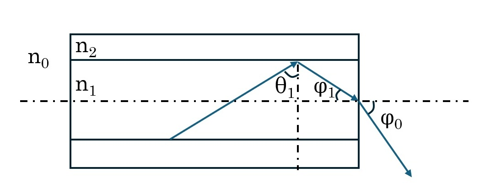
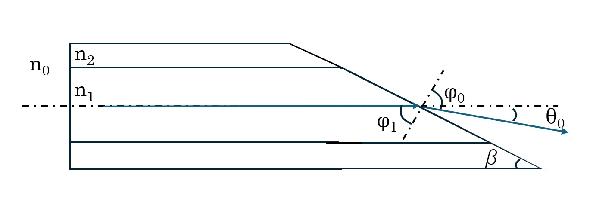
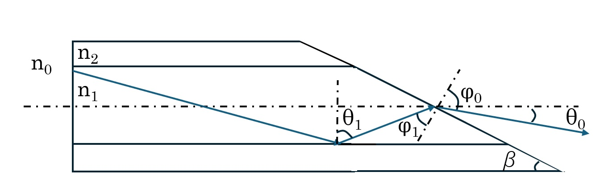
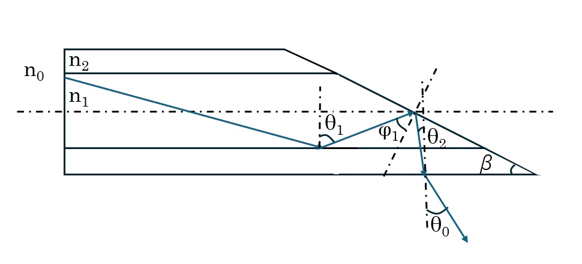

Exit angle from a Optical fiber#
Calculating NA at a Flat End Face#
Consider light propagating through a fiber core with a flat exit face.

To satisfy the total internal reflection condition, the internal incident angle \(\theta_1\) must be greater than the critical angle \(\theta_c\). At the exit interface, the refracted angle \(\phi_1\) is geometrically given by
Substituting this expression into Snell’s law at the interface, \(n_1 \sin \phi_1 = n_0 \sin \phi_0\), gives
Therefore, the maximum value of \(\phi_0\) is obtained when \(\theta_1 = \theta_c\):
Using the definition of the critical angle, \(\sin \theta_c = \frac{n_2}{n_1}\),
we finally obtain
Angled End Face — Case 1#
Now, let us modify the problem slightly and assume that the exit face is not flat, but is a tapered face with an angle \(\beta\).

First, consider light traveling straight along the center of the core. At the interface,
holds. Substituting \(\phi_1 = \dfrac{\pi}{2} - \beta\) and \(\theta_0 = \phi_0 - \phi_1\) gives
However, for light to exit, \(\phi_1\) must be smaller than the critical angle \(\theta_c\) at the core–external-medium interface. Therefore, \(\beta\) must be greater than \(\dfrac{\pi}{2} - \theta_c\).
👉 Click the rocket icon (🚀) → Binder
Angled End Face — Case 2#
As a further variation of Fig. 2, consider light that exits after undergoing total internal reflection.

Likewise, \(n_1 \sin\phi_1 = n_0 \sin\phi_0\) holds at the exit interface. This time, however, \(\phi_1\) is
so substituting it into
gives
Here, the total internal reflection conditions at two interfaces must be satisfied.
\(\theta_1\) must be greater than the critical angle \(\theta_{c1}\) at the core–cladding interface; that is, \(\theta_1 \ge sin^{-1}(\frac{n_2}{n_1})\).
\(\phi_1\) must be smaller than the critical angle \(\theta_{c2}\) at the core–external-medium interface; that is, \(\theta_1-\beta<sin^{-1}(\frac{n_0}{n_1})\).
Angled End Face — Case 3#
As a further variation of Fig. 3, consider light that exits after undergoing total internal reflection.

At the exit interface, \(n_2 \sin\theta_2 = n_0 \sin\theta_0\) holds. Here, refraction between the core and cladding is temporarily ignored.
This time, \(\theta_2\) is
Substituting it into the equation below gives
In addition, substituting \(\phi_1 = \theta_1 - \beta\) gives
Here, the total internal reflection conditions at two interfaces must be satisfied.
\(\theta_1\) must be greater than the critical angle \(\theta_{c1}\) at the core–cladding interface; that is, \(\theta_1 \ge sin^{-1}(\frac{n_2}{n_1})\).
\(\phi_1\) must be greater than the critical angle \(\theta_{c2}\) at the core–external-medium interface; that is, \(\phi_1 \ge sin^{-1}(\frac{n_1}{n_0})\).
import numpy as np
import matplotlib.pyplot as plt
# parameters
n1 = 1.447
n0 = 1.0 # air
# critical angle
theta_c = np.arcsin(n0 / n1)
# cutoff beta (emission start point)
beta_cutoff = np.pi/2 - theta_c
# beta range (0–90 degrees)
beta = np.linspace(0, np.pi/2, 1000)
# Check the domain
argument = (n1 / n0) * np.cos(beta)
# Valid-region mask
valid = argument <= 1
# Calculate theta0 (use NaN for invalid values)
theta0 = np.full_like(beta, np.nan)
theta0[valid] = np.arcsin(argument[valid]) - (np.pi/2 - beta[valid])
# Plot
plt.figure()
plt.plot(beta * 180/np.pi, theta0 * 180/np.pi, label=r'$\theta_0(\beta)$')
# Mark the cutoff
plt.axvline(beta_cutoff * 180/np.pi, linestyle='--', label='cutoff')
# beta = theta_c (maximum point)
plt.axvline(theta_c * 180/np.pi, linestyle=':', label='beta = theta_c')
plt.xlabel(r'$\beta$ (deg)')
plt.ylabel(r'$\theta_0$ (deg)')
plt.title('Emission angle vs taper angle')
plt.legend()
plt.grid()
plt.show()
import numpy as np
import matplotlib.pyplot as plt
from mpl_toolkits.mplot3d import Axes3D
# refractive indices
n1 = 1.447
n2 = 1.431
n0 = 1.0
# critical angles
theta_c1 = np.arcsin(n2 / n1)
theta_c2 = np.arcsin(n0 / n1)
# parameter ranges
theta1 = np.linspace(theta_c1 * 1.01, np.pi/2 - 1e-3, 200)
beta = np.linspace(0, np.pi/2, 200)
THETA1, BETA = np.meshgrid(theta1, beta)
# phi1
phi1 = THETA1 - BETA
# Condition 1: core–cladding TIR
cond1 = THETA1 > theta_c1
# Condition 2: prevent TIR at the exit face
cond2 = phi1 < theta_c2
# Snell-law domain
argument = (n1 / n0) * np.sin(phi1)
cond3 = argument <= 1
# Combined conditions
valid = cond1 & cond2 & cond3
# Calculate theta0
theta0 = np.full_like(THETA1, np.nan)
theta0[valid] = np.arcsin(argument[valid]) - phi1[valid]
# Find the maximum value
max_idx = np.nanargmax(theta0)
max_theta0 = np.nanmax(theta0)
beta_max = BETA.flatten()[max_idx]
theta1_max = THETA1.flatten()[max_idx]
# Plot
fig = plt.figure()
ax = fig.add_subplot(111, projection='3d')
ax.plot_surface(
BETA * 180/np.pi,
THETA1 * 180/np.pi,
theta0 * 180/np.pi,
cmap='viridis'
)
# Mark the maximum point
ax.scatter(
beta_max * 180/np.pi,
theta1_max * 180/np.pi,
max_theta0 * 180/np.pi,
color='red',
s=50,
label='Max'
)
ax.set_xlabel(r'$\beta$ (deg)')
ax.set_ylabel(r'$\theta_1$ (deg)')
ax.set_zlabel(r'$\theta_0$ (deg)')
ax.set_title('3D map of emission angle')
ax.legend()
plt.show()
# Print the maximum value
print("Max theta0 (deg):", max_theta0 * 180/np.pi)
print("At beta (deg):", beta_max * 180/np.pi)
print("At theta1 (deg):", theta1_max * 180/np.pi)
---------------------------------------------------------------------------
ModuleNotFoundError Traceback (most recent call last)
Cell In[1], line 2
1 import numpy as np
----> 2 import plotly.graph_objects as go
4 x = np.linspace(0, 10, 1000)
5 phi = 0
ModuleNotFoundError: No module named 'plotly'